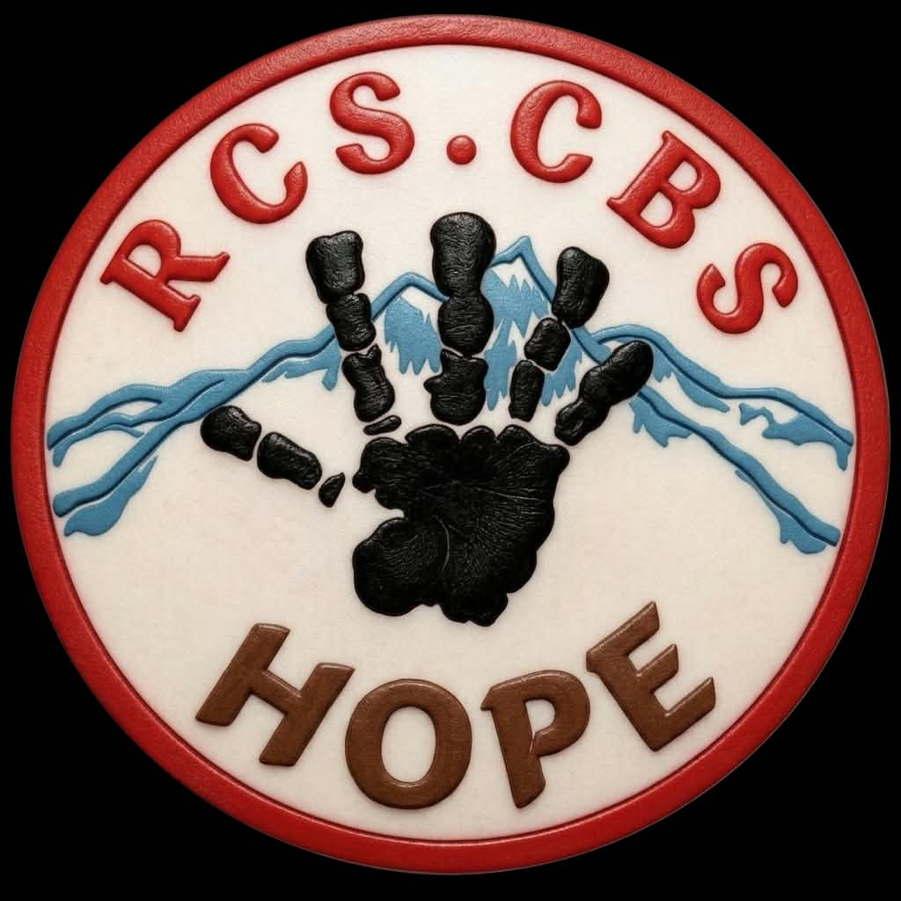

Misi 01 / Hutan & Satwa
Temukan kata. Kenali alam.
Isi kotak berdasarkan petunjuk. Kalau buntu, gunakan bantuan secara hemat—setiap misi menyediakan 3 hint gratis.
20 soalPemula3 hint / misi

Misi 01 / Hutan & Satwa
Isi kotak berdasarkan petunjuk. Kalau buntu, gunakan bantuan secara hemat—setiap misi menyediakan 3 hint gratis.
Hutan lebat yang masih alami